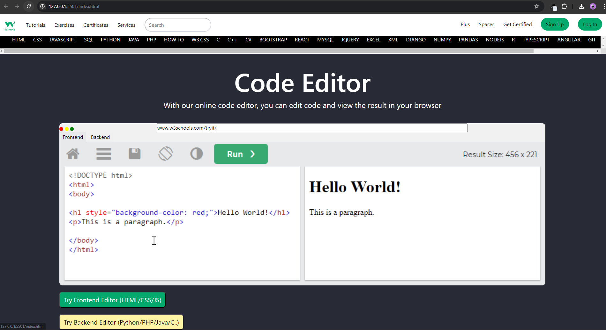
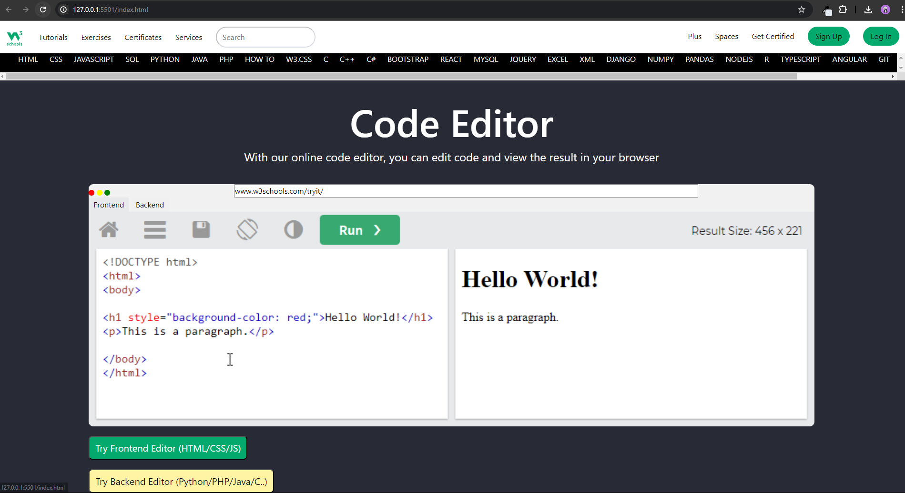

Monif Gurung - Web Developer
As a web developer, I bring a blend of skills that emphasize high-level proficiency in HTML, solid competency in CSS, and foundational knowledge in JavaScript and Laravel. With a keen eye for detail and a passion for crafting visually appealing and functional websites, I specialize in creating clean and intuitive user interfaces. My HTML expertise ensures structurally sound and accessible web pages, while my CSS skills enhance layout and design aesthetics. Though my JavaScript and Laravel skills are at more introductory levels, I am committed to continuous learning and improvement, striving to integrate dynamic elements and leverage frameworks to enhance user experiences. I am eager to contribute to projects that challenge me to grow and innovate in web development.
 8
8
I have completed eight projects using HTML, CSS, JavaScript, Laravel showcasing my proficiency in web development.
 3
3
I possess three years of hands-on experience in HTML, JavaScript, CSS, and Laravel. During this time, I've developed a strong foundation in web development, focusing on creating responsive layouts, implementing dynamic functionalities with JavaScript, and leveraging Laravel for robust backend solutions.
2
Throughout my career, I have been honored with two awards, recognizing my achievements and contributions in web development.
 24
24
I am proud to have received 24 positive reviews throughout my career, reflecting my dedication to delivering high-quality work and exceptional service in web development. These reviews validate my commitment to client satisfaction and highlight my ability to consistently meet and exceed expectations.


 
